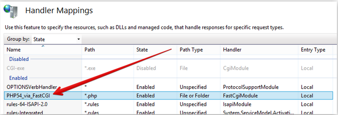
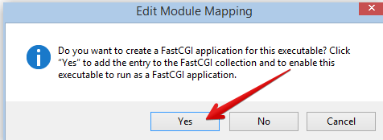

Microsoft IIS and SQL Server Support¶
The preferred approach to installing the necessary prerequisites for ownCloud is to use the Microsoft Web Platform Installer (WPI). This free utility can be downloaded from this link, http://www.microsoft.com/web/downloads/platform.aspx.
Configuration¶
Once downloaded and installed, invoke the WPI. It will look like the following:

Navigate to the “Products” tab:

And install the following by selecting “Add” next to the instance.
Server¶
IIS Recommended Configuration
IIS Static Content
IIS Default Document
IIS Directory Browsing
IIS HTTP Errors
IIS HTTP Redirection
IIS CGI
IIS ISAPI Extensions
IIS ISAPI Filters
IIS Server Side Includes
IIS HTTP Logging
IIS Logging Tools
IIS Request Monitor
IIS Tracing
IIS Custom Logging
IIS Client Certificate Mapping Authentication
IIS URL Authorization
IIS Request Filtering
IIS IP Domain Restrictions
IIS Static Content Compression
IIS Dynamic Content Compression
IIS Management Console
IIS Management Scripts and Tools
IIS Management Service
Database¶
Microsoft Drivers for PHP v5.4 for SQL Server IIS
Tools¶
PHP Manager for IIS
Installation¶
Once these selections have been made, click the install button and allow the web platform installer to lay down the needed code to configure the web server.
Verbs¶
It is important to enable all verbs in the PHP FastCGI settings in order for the sync to work properly.
In the IIS Management application, double click Handler Mappings.

Then double-click on the PHP FastCGI Settings.
Select “Request Restrictions”.

Navigate to the Verbs tab and verify that “All Verbs” is selected.

The following error may appear when this value is set and OK is selected.
The resolution is to put quotes around the exe name as follows.

When prompted to create a FastCGI application, select Yes.
Restart the IIS service to make sure all settings are applied.
Install ownCloud¶
Once the prerequisites have been installed, the system is ready for the ownCloud installation
To install ownCloud simply copy the ownCloud code to the IIS root directory, change the permissions on the folder to make sure that the user that IIS will use for access can indeed access the files.
Data directory¶
Verify the desired storage directory has proper permissions for the user IIS is using to access. For example, if IIS users anonymous access, the user is “webusr”. Make certain “webusr” has access to the directory or share.
Run ownCloud¶
At this time, ownCloud is installed. Navigate to the ownCloud web interface in the browser and initialize the instance. Select MSSQL option for the database under the Advanced tab. Provide the location for the database server as well as the login and password for the database.